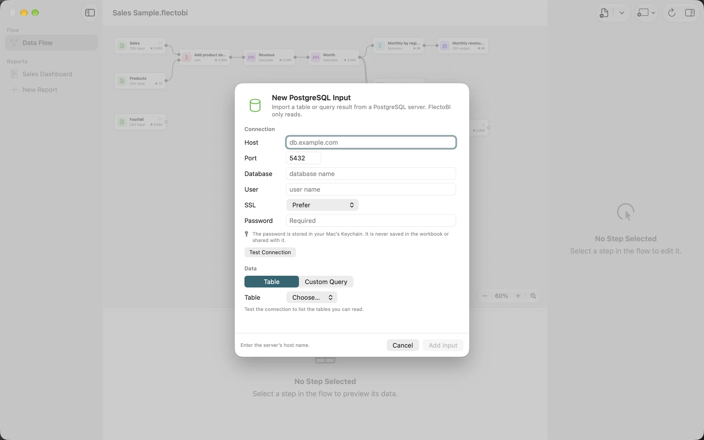

Connecting to databases
FlectoBI can read from PostgreSQL, MySQL and MariaDB. It only reads. It never writes to a database, and it never changes one. This page shows how to connect, what the SSL choices mean, and what to do when a connection fails.
Add a database Input
- Click Add Input in the toolbar and choose New PostgreSQL Input… or New MySQL Input…. The same items are in the Flow menu. Use the MySQL one for MariaDB too. On an empty Flow, click Connect to Database and choose PostgreSQL… or MySQL or MariaDB….
- Fill in Host, Port, Database and User. The port starts as 5432 for PostgreSQL and 3306 for MySQL.
- Choose the SSL mode. See below.
- Type the Password.
- Click Test Connection. FlectoBI tells you how many tables and views it found.
- Choose what to read, then click Add Input.


A table or one query
The Data section has two choices.
- Table: after a successful test, pick a table or view from the list. Views are marked “(view)”. In PostgreSQL, names look like schema.table. The Step takes the table’s name.
- Custom Query: type one query. The server runs it in a read-only session. The Step is named after the database and the word query. Command-Return adds the Input from the query editor.
For MySQL and MariaDB, a query must start with SELECT, WITH, TABLE or VALUES. Enter one query only, with at most one semicolon at the end. Remove INTO, because the rows come into FlectoBI, not into a file. FlectoBI shows the problem in the sheet before you add the Input.
What the SSL modes mean
SSL decides whether the conversation between your Mac and the server is encrypted, and whether FlectoBI checks who it is talking to.
| Mode | In plain words |
|---|---|
| Off | Nothing is encrypted. Anyone on the network could read the password and the data. |
| Prefer | Encrypted when the server offers it. FlectoBI does not check the server’s identity. |
| Require | Always encrypted. The server’s identity is not checked. |
| Verify certificate | Always encrypted, and FlectoBI checks the server’s certificate against the certificates your Mac trusts. |
For a server on another machine, choose Verify certificate whenever you can. A new connection to another machine starts at Require for PostgreSQL and Verify certificate for MySQL. A connection to your own Mac starts at Prefer, because the traffic never leaves it.
If your MySQL server uses its own certificate, Verify certificate may fail. FlectoBI then suggests Require. For MySQL, the sheet shows a warning under the SSL choice when the mode is weaker than it should be for the server you named.
Where the password goes
The password is saved in your Mac’s Keychain. It is never stored in the Workbook, and it does not travel when you share one.
- A password is used only for the exact server it was saved for: the same host, port, database and user. If you copy a Workbook and change the host, FlectoBI asks for the password again.
- For MySQL, a password saved under one SSL mode is also used for stronger modes. If you lower the mode, FlectoBI asks again.
- Other Inputs for the same server pick up a saved password and read without asking.
Typing a new password in the inspector and clicking Apply moves it into the Keychain and clears the field.
Snapshots and refresh
A database Input copies the table or the query result into FlectoBI. It does not stay connected. Your Flow and Reports work on that copy. Click Refresh to read a fresh copy. FlectoBI connects only to the host and port you typed, and only when you test, add or refresh an Input, or open a Workbook with a saved password.
Once an Input exists, its inspector shows the same fields. Changes to the connection wait for Apply. A change of table or query applies at once.
Common errors
| What you see | What to do |
|---|---|
| Authentication failed. Check the user name and password. | Retype them. |
| The server refused the connection. Check the host and port. | Check the address, the port and any firewall. |
| The host name could not be found. | Check the spelling, and your network. |
| The server did not respond in time. | Try again, or ask whether the server is up. |
| The server requires SSL. Choose Require or Verify certificate. | Change the SSL mode. |
| The server’s certificate could not be verified. | If the server uses its own certificate, choose Require. |
| This user may not read that database or table. | Ask for read permission. |
| That table does not exist. | Check the table name. |
What is not supported
- Accounts on MySQL or MariaDB that sign in with ed25519, PARSEC or sha256_password. Ask for an account that uses caching_sha2_password or mysql_native_password.
- Servers that offer only TLS 1.0 or 1.1. MySQL needs TLS 1.2 or later.
- Stored procedures on MySQL and MariaDB (CALL). Only queries that read data are accepted.
- Other databases. SQL Server, Oracle and cloud warehouses are not available.
FlectoBI is tested with MySQL 8.4, 9.7 and 26.x, and MariaDB 11.8.